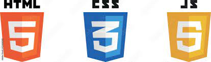

Olá, eu sou Eduardo,
Programador Front-end
Sou um programador front-end junior apaixonado por criar interfaces visuais interativas
e funcionais. Com sólidos conhecimentos em HTML, CSS e JavaScript,tenho a habilidade
de transformar designs em sites responsivos e amigáveis para o usuário.
Sobre-min
Frontend Developer
Durante minha jornada como estudante, adquiri experiência em desenvolvimento web através de projetos acadêmicos e pessoais. Dediquei-me para aprimorar minhas habilidades em frameworks como Bootstrap e bibliotecas como jQuery, para otimizar a criação de interfaces modernas e dinâmicas.
Além disso, estou sempre buscando aprender novas tecnologias, como Vue.js e React, para expandir meu conhecimento e acompanhar as tendências do mercado.
Sou um profissional dedicado, focado em entregar soluções de alta qualidade e que estejam alinhadas com as necessidades dos clientes. Tenho facilidade em trabalhar em equipe e estou aberto a feedbacks construtivos, pois acredito que a colaboração é essencial para o crescimento profissional.
Estou empolgado para fazer parte de equipes de desenvolvimento e contribuir para o sucesso de projetos desafiadores. Meu objetivo é continuar evoluindo como programador front-end, aperfeiçoando minhas habilidades e adquirindo experiência prática no mundo real. Confira meu portfólio para ver alguns dos projetos em que trabalhei e sinta-se à vontade para entrar em contato comigo para discutir como posso contribuir em sua equipe ou projeto.
Skils
Portifolio
Clone-HBOmax
Apresento-lhe meu projeto de uma página de login. Criei uma interface intuitiva, responsiva e segura, que oferece aos usuários uma experiência agradável e protege suas informações. Utilizei HTML, CSS e JavaScript para desenvolvê-la, buscando a simplicidade, usabilidade e velocidade de carregamento. Estou animado(a) para compartilhar mais detalhes e discutir oportunidades de colaboração.

Clone-Netflix
Apresento-lhe meu projeto de uma página de login. Criei uma interface intuitiva, responsiva e segura, que oferece aos usuários uma experiência agradável e protege suas informações. Utilizei HTML, CSS e JavaScript para desenvolvê-la, buscando a simplicidade, usabilidade e velocidade de carregamento. Estou animado(a) para compartilhar mais detalhes e discutir oportunidades de colaboração.


Cordel Moderno
Apresento-lhe meu projeto de uma página de login. Criei uma interface intuitiva, responsiva e segura, que oferece aos usuários uma experiência agradável e protege suas informações. Utilizei HTML, CSS e JavaScript para desenvolvê-la, buscando a simplicidade, usabilidade e velocidade de carregamento. Estou animado(a) para compartilhar mais detalhes e discutir oportunidades de colaboração.

Blog-Android
Apresento-lhe meu projeto de uma página de login. Criei uma interface intuitiva, responsiva e segura, que oferece aos usuários uma experiência agradável e protege suas informações. Utilizei HTML, CSS e JavaScript para desenvolvê-la, buscando a simplicidade, usabilidade e velocidade de carregamento. Estou animado(a) para compartilhar mais detalhes e discutir oportunidades de colaboração.


Connect-Vous
Apresento-lhe meu projeto de uma página de login. Criei uma interface intuitiva, responsiva e segura, que oferece aos usuários uma experiência agradável e protege suas informações. Utilizei HTML, CSS e JavaScript para desenvolvê-la, buscando a simplicidade, usabilidade e velocidade de carregamento. Estou animado(a) para compartilhar mais detalhes e discutir oportunidades de colaboração.

Clone-Sing in Github
Apresento-lhe meu projeto de uma página de login. Criei uma interface intuitiva, responsiva e segura, que oferece aos usuários uma experiência agradável e protege suas informações. Utilizei HTML, CSS e JavaScript para desenvolvê-la, buscando a simplicidade, usabilidade e velocidade de carregamento. Estou animado(a) para compartilhar mais detalhes e discutir oportunidades de colaboração.


Sistok
Apresento-lhe meu projeto de uma página de login. Criei uma interface intuitiva, responsiva e segura, que oferece aos usuários uma experiência agradável e protege suas informações. Utilizei HTML, CSS e JavaScript para desenvolvê-la, buscando a simplicidade, usabilidade e velocidade de carregamento. Estou animado(a) para compartilhar mais detalhes e discutir oportunidades de colaboração.
.

Kreativ
Apresento-lhe meu projeto de uma página de login. Criei uma interface intuitiva, responsiva e segura, que oferece aos usuários uma experiência agradável e protege suas informações. Utilizei HTML, CSS e JavaScript para desenvolvê-la, buscando a simplicidade, usabilidade e velocidade de carregamento. Estou animado(a) para compartilhar mais detalhes e discutir oportunidades de colaboração.


Skambo
Apresento-lhe meu projeto de uma página de login. Criei uma interface intuitiva, responsiva e segura, que oferece aos usuários uma experiência agradável e protege suas informações. Utilizei HTML, CSS e JavaScript para desenvolvê-la, buscando a simplicidade, usabilidade e velocidade de carregamento. Estou animado(a) para compartilhar mais detalhes e discutir oportunidades de colaboração.

Conscientização do Cancer
Apresento-lhe meu projeto de uma página de login. Criei uma interface intuitiva, responsiva e segura, que oferece aos usuários uma experiência agradável e protege suas informações. Utilizei HTML, CSS e JavaScript para desenvolvê-la, buscando a simplicidade, usabilidade e velocidade de carregamento. Estou animado(a) para compartilhar mais detalhes e discutir oportunidades de colaboração.